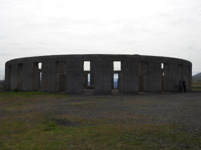
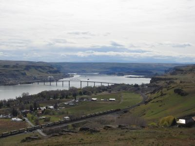

Camping at Le Page Park, OR
这是仿英国Stonehenge 建的纪念馆, 用于记念当地在一次世界大战时牺牲的13个年轻人！
墓碑上的这句话让我印象深刻：
“After all our civilization, the flower of humanity still is being satisficed to the god of war on fields of battle.”
试着自己翻译一下："经过了这么多文明，我们仍然需要人的生命来祭祀战神"
非常令人感慨！！

纪念馆俯瞰哥伦比亚河的风景。

×